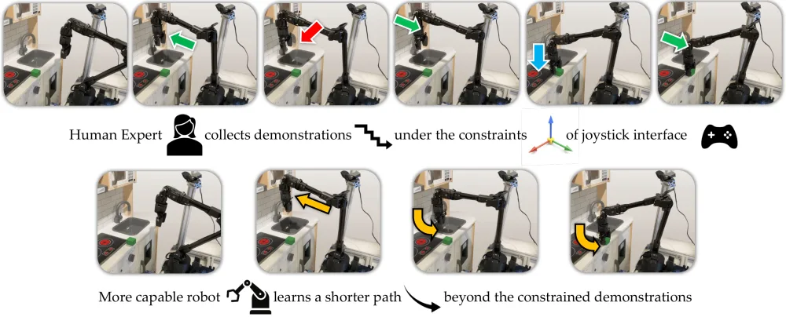
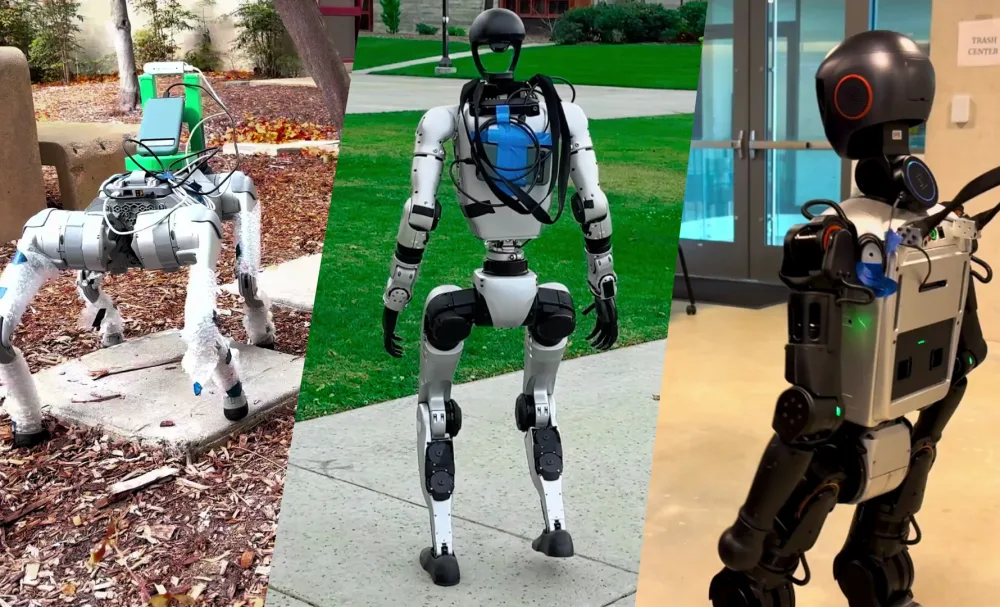
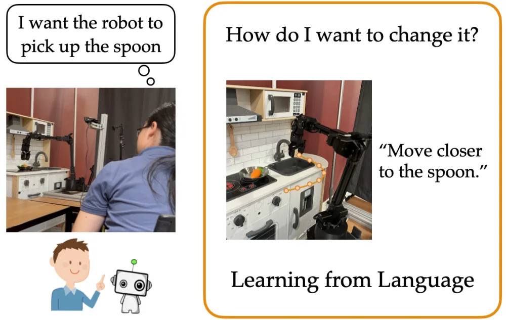
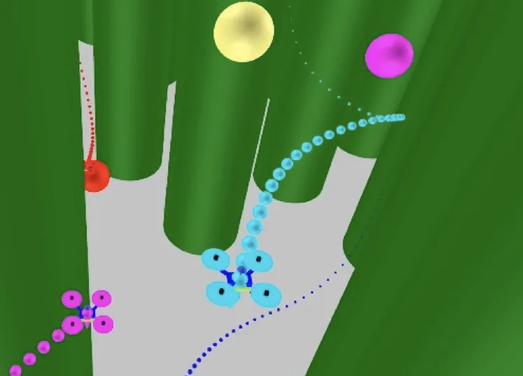
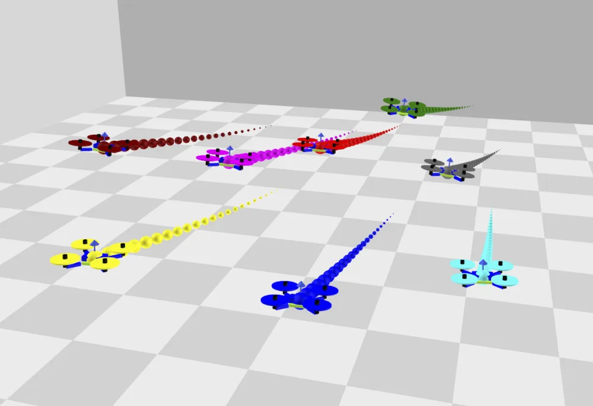

News
- May 2026 I joined MSL following Meta's acquisition of ARI.
- Jan 2026 Our paper on Learning from Constrained Demonstrators was accepted to ICLR 2026. Congrats to Xinhu and the team!
- Oct 2025 Our paper on Active Reward Learning from Language Feedback was accepted to IJRR. Congrats to Eisuke and the team!
- May 2025 I joined ARI as a founding research engineer.
- Apr 2025 NaVILA was accepted to RSS 2025. See you in Los Angeles!
- Oct 2024 Our paper on Learning from Comparative Language Feedback was accepted to CoRL 2024!
- Jan 2024 Our paper on Quadrotors Collision Avoidance and Local Navigation was accepted to ICRA 2024!
Publications
* denotes equal contribution, † denotes equal advising

NaVILA: Legged Robot Vision-Language-Action Model for Navigation
RSS 2025


